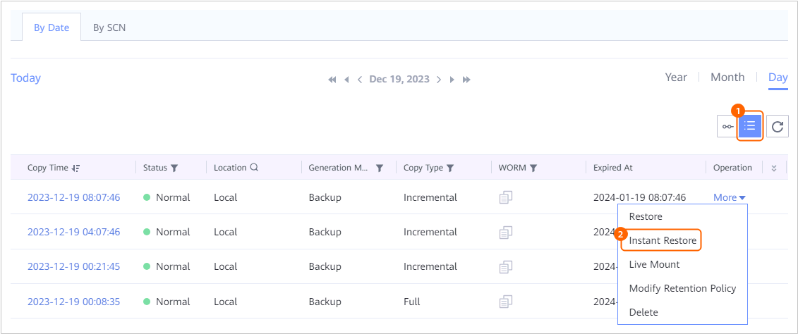
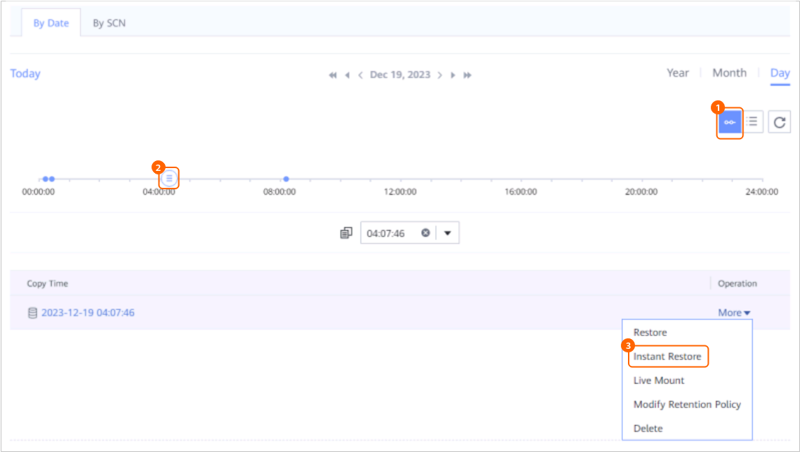

This section describes how to instantly restore an Oracle database that has been backed up to the original or new location.
Context
- Instant recovery of Oracle databases allows you to specify a copy, a time point, or an SCN.
- An Oracle database can be instantly restored using a backup copy, replication copy, or copy generated by live mount. In addition, an Oracle database can be restored to the original location or a new location. Note that replication copies cannot be used to restore an Oracle database to the original location.
- Instant recovery to the original location
Instant recovery to the original location indicates that data is restored to the original host and directory of the database. During the restoration, the original database is overwritten.
- Instant recovery to a new location
When instant recovery to a new location is performed, the system restores the new database to the specified location. If a database with the same name exists, it will be overwritten.
- Instant recovery to the original location
- During instant recovery, if a database with the same name exists in the target location, you are advised not to stop the restoration job. Otherwise, the original database will be damaged.
Prerequisites
- ProtectAgent and other related software have been installed on the target host for restoration.
For details, see the OceanProtect Appliance 1.5.0-1.6.0 ProtectAgent Installation Guide.
- When restoring data to the original host and you have configured Oracle Managed Files (OMF) for the host, ensure that the free disk space of the host is greater than the size of the database.
- When restoring data to a different host, ensure that the free disk space of the target host is greater than the size of the database.
Procedure
- During the restoration, if a database with the same name exists in the target location, shut down the database first. Otherwise, the restoration will fail. To shut down the database, do as follows:

The database with the same name at the target location will be overwritten after the restoration.
- When restoring data to the original location, ensure that the free memory size of the target host must be greater than the total size of the SGA and PGA of the database. Otherwise, the restoration may fail.The procedures for checking the memory size, SGA size, and PGA size are as follows:
- Check the SGA size and PGA size.
- Log in to the Oracle database.
For details, see 1.
- Run the following command to check the SGA size:
show parameter sga;
The command output similar to the following is displayed. Check the value of sga_target.SQL> show parameter sga; NAME TYPE VALUE ------------------------------------ --------------------------------- ------------------------------ allow_group_access_to_sga boolean FALSE lock_sga boolean FALSE pre_page_sga boolean TRUE sga_max_size big integer 4768M sga_min_size big integer 0 sga_target big integer 4768M unified_audit_sga_queue_size integer 1048576
- Run the following command to check the PGA size:
show parameter pga;
The command output similar to the following is displayed. Check the value of pga_aggregate_target.
SQL> show parameter pga; NAME TYPE VALUE ------------------------------------ -------------------------------- ------------------------------ pga_aggregate_limit big integer 3900M pga_aggregate_target big integer 1589M
- Run the following command to check free memory size:
free -h
The command output similar to the following is displayed. Check the free memory size.
[root@localhost ~]# free -h total used free shared buff/cache available Mem: 15G 2.2G 992M 4.8G 12G 8.1G Swap: 99G 0B 99GIf the free memory size is not greater than the sum of sga_target and pga_aggregate_target values, clear the memory to ensure that the free memory size is greater than the sum of sga_target and pga_aggregate_target values.
- Log in to the Oracle database.
- Check the SGA size and PGA size.
- If the Linux OS is used and the target host for recovery is in the high availability cluster server (HACS) cluster, freeze the HACS cluster before the recovery.You can check whether the target host is in the HACS cluster by referring to Checking Whether the Target Recovery Host Is a Host in the HACS Cluster.
- Choose Explore > Copy Data > Databases > Oracle.
- You can search for copies by database resource or copy. This section uses database resources as an example.
On the Resources tab page, locate the database for which instant recovery is to be performed by database name and then click the name.
- Specify a copy or time point to perform instant recovery.
You can specify a copy or any time point between two copies for instant recovery.
If you need to specify an SCN for instant recovery, ignore this step and go to 7.- On the By Date tab page, select a year, month, and day in sequence to search for copies.
If
 is displayed under a month or date, a copy exists in the month or on the date.
is displayed under a month or date, a copy exists in the month or on the date. - Perform instant recovery by specifying a copy or any time point between two copies.
- Specifying a copy for instant recovery

- Specifying any time point between two copies
On the timeline,
 indicates that a copy exists at the time point.
indicates that a copy exists at the time point.
- For 1.5.0, a maximum of 100 copies can be displayed on the timeline. You can click
 to view all copies.
to view all copies. - During point-in-time recovery, the information about the copy used for restoration cannot be obtained on the management page. Therefore, users cannot view the copy information of the restoration job on pages of the restoration job and related events.
- For 1.5.0, a maximum of 100 copies can be displayed on the timeline. You can click
- Specifying a copy for instant recovery
- Instantly restore the Oracle database to the original location or a new location.
- Instantly restore the Oracle database to the original location.
- Set Restore To to Original location.
The remaining space of the disk where the target path is located must be greater than the space occupied by the source database. Otherwise, the restoration job will fail.
- Set the advanced parameters for instant recovery.
Table 1 describes the related parameters.
Table 1 Advanced parameters of an instant recovery job Parameter
Description
BCT
- If you enable the BCT function, the BCT function will be automatically enabled after the restoration is successful.
- If you disable the BCT function, the BCT function will be automatically disabled after the restoration is successful.
Channels
Controls the concurrency of restoration jobs. This parameter specifies the maximum number of connections between RMAN and database instances. If the host performance is average, you are advised to retain the default value. If the host performance is excellent, you can increase the number of channels to improve the concurrency and restoration efficiency. It is recommended that the number of channels be the same as the number of data files.
Value range: 1 to 254. If this parameter is not specified, value 8 is used by default.
Execution Script
You can execute a user-defined script before restoration, upon restoration success, or upon restoration failure as required.
Script to Run Before Restoration
Enter a script name that ends with .sh. Ensure that the script is stored in the DataBackup/ProtectClient/ProtectClient-E/sbin/thirdparty directory in the database host installation directory and the user (user root by default) who has logged in to the database host is permitted to execute the script. If the user has no execution permission, run the following commands in sequence to grant the permission:
chown root:root Script name
chmod 500 Script name
NOTE:When Script to Run upon Restoration Success is configured, the status of the restoration job is displayed as Succeeded on the management page even if the script fails to be executed. Check whether the job details contain a message indicating that a post-processing script fails to be executed. If yes, modify the script in a timely manner.
Script to Run upon Restoration Success
Script to Run upon Restoration Failure
- Click OK.
- Set Restore To to Original location.
- Instantly restore the Oracle database to a new location.
- Set Restore To to New location.
- Set the basic and advanced parameters for instant recovery.
Table 2 describes the related parameters.
Table 2 Instant recovery parameters Parameter
Description
Target Host/Cluster
Target host or cluster for instant recovery.
NOTE:If you want to restore data to a cluster, select a node in the cluster.
Original InstanceNOTE:This parameter is available only in 1.6.0 and later versions.
Original instance to be restored to the target location.
Target InstanceNOTE:This parameter is available only in 1.6.0 and later versions.
Name of the instance in the target location for restoration. If you do not set this parameter, the instance name is the same as the original instance name before the restoration.NOTE:If the target instance name is configured, use the target instance name to log in to the database after the restoration.
Target Path
ASM disk group directory or file system directory where the database to be instantly restored is located on the target host. The name of the database remains unchanged after being instantly restored.
An example of the ASM disk group directory is +ORADATA, and an example of the file system directory is /u01/oracle/oradata/.
NOTE:- If the target path is empty, prepare the ASM disk group directory or file system directory that is the same as that of the production database on the target host in advance.
- The remaining space of the disk where the target path is located must be greater than the space occupied by the source database. Otherwise, the restoration job will fail.
BCT
- If you enable the BCT function, the BCT function will be automatically enabled after the restoration is successful.
- If you disable the BCT function, the BCT function will be automatically disabled after the restoration is successful.
Channels
Controls the concurrency of restoration jobs. This parameter specifies the maximum number of connections between RMAN and database instances. If the host performance is average, you are advised to retain the default value. If the host performance is excellent, you can increase the number of channels to improve the concurrency and restoration efficiency. It is recommended that the number of channels be the same as the number of data files.
Value range: 1 to 254. If this parameter is not specified, value 8 is used by default.
Script to Run Before Restoration
You can execute a user-defined script before instant recovery, upon instant recovery success, or upon instant recovery failure as required.
Enter a script name that ends with .sh. Ensure that the script is stored in the DataBackup/ProtectClient/ProtectClient-E/sbin/thirdparty directory in the database host installation directory and the user (user root by default) who has logged in to the database host is permitted to execute the script. If the user has no execution permission, run the following commands in sequence to grant the permission:
chown root:root Script name
chmod 500 Script name
Script to Run upon Restoration Success
Script to Run upon Restoration Failure
Modify Database Settings
Modify the database parameters based on the actual configuration of the target host. If any parameter is set incorrectly, the database may fail to be restored.
NOTE:During restoration, ensure that the free memory size of the target host must be greater than the total size of the SGA and PGA of the database. Otherwise, the restoration may fail.
- Check the free memory size of the target host.
For details, see 2.
- After enabling Modify Database Settings, search for *.pga_aggregate_target and *.sga_target parameters.
Check whether the free memory size is greater than the sum of *.pga_aggregate_target and *.sga_target values.
- If yes, no further action is required.
- If no, go to 3.
- Modify either *.pga_aggregate_target or *.sga_target parameters or both of them to ensure that the free memory size is greater than the sum of *.pga_aggregate_target and *.sga_target values.
If multiple identical parameters are found, modify all of them.
- If *.pga_aggregate_target is modified, change Instance name.__pga_aggregate_target to the following:
Instance name.__pga_aggregate_target = *.pga_aggregate_target * 1024 *1024
If *.sga_target is modified, change Instance name.__sga_target to the following:
Instance name.__sga_target = *.sga_target * 1024 *1024
- Click OK.
For 1.6.0 and later versions: If the name of the target database for restoration is the same as that of the original database, scan the restoration target resource after the restoration job is complete to ensure that the obtained instance name information is correct.
- Instantly restore the Oracle database to the original location.
- On the By Date tab page, select a year, month, and day in sequence to search for copies.
- Specify an SCN for instant recovery.
- On the By SCN tab page, enter an SCN and choose More > Instant Recovery.
Run the following command to obtain the current SCN of the database:
select dbms_flashback.get_system_change_number from dual;
- Select a backup copy for restoration.
All backup copies that contain the specified SCN are displayed. You can determine the SCN to be restored to based on the time when a backup copy is generated.
If no backup copy is displayed, no logs are backed up at the specified SCN and therefore data cannot be restored based on the SCN. In this case, enter another SCN.
- Instantly restore the database to its original location or a new location.
For details, see 6.c.
- On the By SCN tab page, enter an SCN and choose More > Instant Recovery.